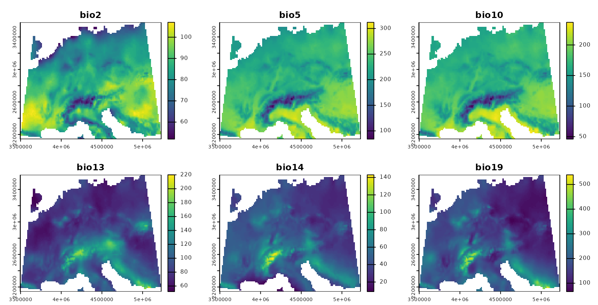
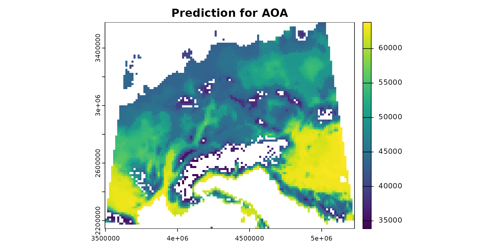
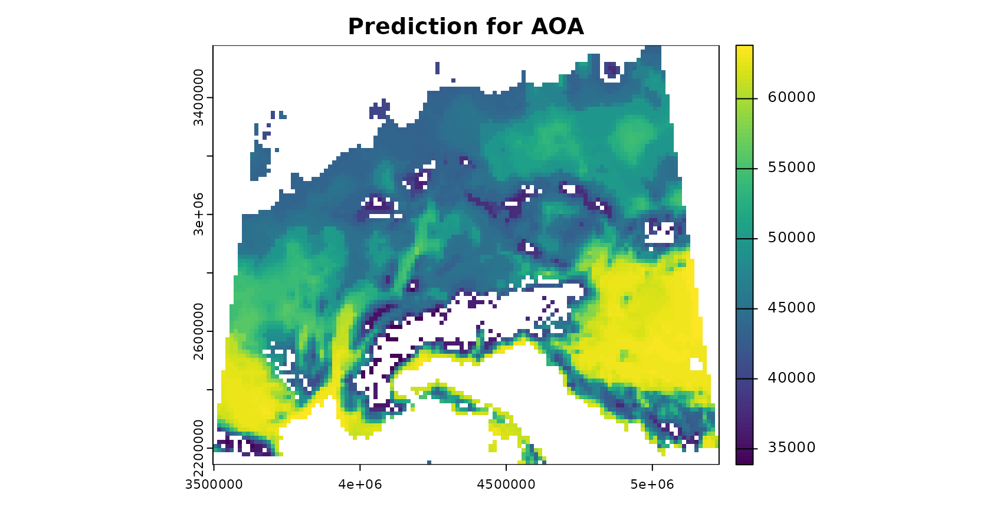
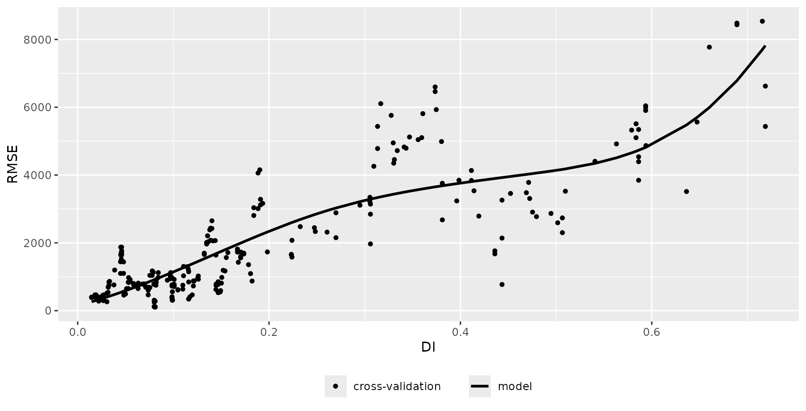
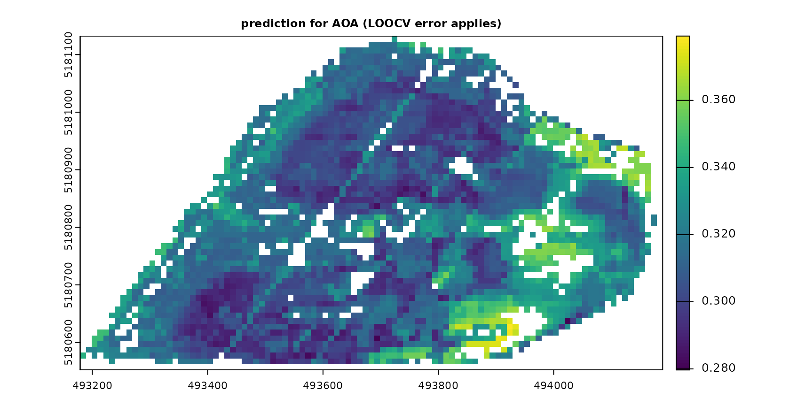
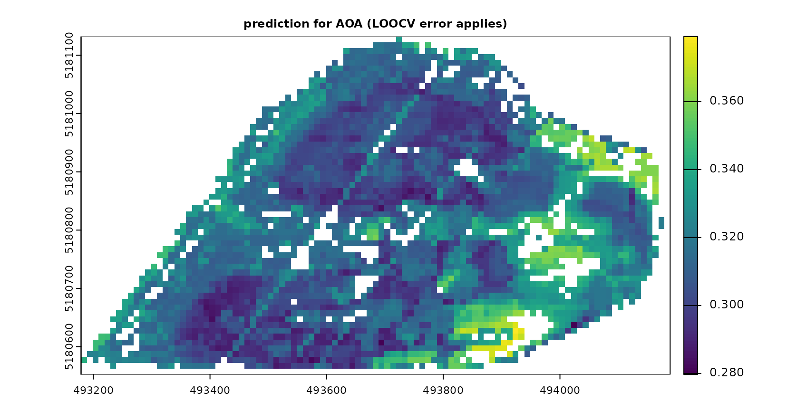

4. Area of applicability of spatial prediction models
Hanna Meyer
2024-04-09
Source:vignettes/cast04-AOA-tutorial.Rmd
cast04-AOA-tutorial.RmdIntroduction
In spatial predictive mapping, models are often applied to make predictions far beyond sampling locations (i.e. field observations used to map a variable even on a global scale), where new locations might considerably differ in their environmental properties. However, areas in the predictor space without support of training data are problematic. The model has not been enabled to learn about relationships in these environments and predictions for such areas have to be considered highly uncertain.
In CAST, we implement the methodology described in Meyer&Pebesma (2021) to estimate the “area of applicability” (AOA) of (spatial) prediction models. The AOA is defined as the area where we enabled the model to learn about relationships based on the training data, and where the estimated cross-validation performance holds. To delineate the AOA, first an dissimilarity index (DI) is calculated that is based on distances to the training data in the multidimensional predictor variable space. To account for relevance of predictor variables responsible for prediction patterns we weight variables by the model-derived importance scores prior to distance calculation. The AOA is then derived by applying a threshold based on the DI observed in the training data using cross-validation.
This tutorial shows an example of how to estimate the area of applicability of spatial prediction models.
For further information see: Meyer, H., & Pebesma, E. (2021). Predicting into unknown space? Estimating the area of applicability of spatial prediction models. Methods in Ecology and Evolution, 12, 1620– 1633. [https://doi.org/10.1111/2041-210X.13650]
Example 1: Using simulated data
Get data
Generate Predictors
As predictor variables, a set of bioclimatic variables are used (https://www.worldclim.org). For this tutorial, they have been originally downloaded using the getData function from the raster package but cropped to an area in central Europe. The cropped data are provided in the CAST package.
predictors <- rast(system.file("extdata","bioclim.tif",package="CAST"))
plot(predictors,col=viridis(100))
Generate Response
To be able to test the reliability of the method, we’re using a simulated prediction task. We therefore simulate a virtual response variable from the bioclimatic variables.
generate_random_response <- function(raster, predictornames =
names(raster), seed = sample(seq(1000), 1)){
operands_1 = c("+", "-", "*", "/")
operands_2 = c("^1","^2")
expression <- paste(as.character(predictornames, sep=""))
# assign random power to predictors
set.seed(seed)
expression <- paste(expression,
sample(operands_2, length(predictornames),
replace = TRUE),
sep = "")
# assign random math function between predictors (expect after the last one)
set.seed(seed)
expression[-length(expression)] <- paste(expression[-
length(expression)],
sample(operands_1,
length(predictornames)-1, replace = TRUE),
sep = " ")
print(paste0(expression, collapse = " "))
# collapse
e = paste0("raster$", expression, collapse = " ")
response = eval(parse(text = e))
names(response) <- "response"
return(response)
}
response <- generate_random_response (predictors, seed = 10)## [1] "bio2^1 * bio5^1 + bio10^2 - bio13^2 / bio14^2 / bio19^1"
Simulate sampling locations
To simulate a typical prediction task, field sampling locations are randomly selected. Here, we randomly select 20 points. Note that this is a very small data set, but used here to avoid long computation times.
mask <- predictors[[1]]
values(mask)[!is.na(values(mask))] <- 1
mask <- st_as_sf(as.polygons(mask))
mask <- st_make_valid(mask)
set.seed(15)
samplepoints <- st_as_sf(st_sample(mask,20,"random"))
plot(response,col=viridis(100))
plot(samplepoints,col="red",add=T,pch=3)
Model training
Next, a machine learning algorithm will be applied to learn the relationships between predictors and response.
Train the model
Random Forest is applied here as machine learning algorithm (others can be used as well, as long as variable importance is returned). The model is validated by default cross-validation to estimate the prediction error.
set.seed(10)
model <- train(trainDat[,names(predictors)],
trainDat$response,
method="rf",
importance=TRUE,
trControl = trainControl(method="cv"))
print(model)## Random Forest
##
## 20 samples
## 6 predictor
##
## No pre-processing
## Resampling: Cross-Validated (10 fold)
## Summary of sample sizes: 18, 18, 18, 18, 18, 18, ...
## Resampling results across tuning parameters:
##
## mtry RMSE Rsquared MAE
## 2 3854.481 1 3310.203
## 4 3084.764 1 2675.126
## 6 2960.314 1 2571.475
##
## RMSE was used to select the optimal model using the smallest value.
## The final value used for the model was mtry = 6.Variable importance
The estimation of the AOA will require the importance of the individual predictor variables.
Predict and calculate error
The trained model is then used to make predictions for the entire area of interest. Since a simulated area-wide response is used, it’s possible in this tutorial to compare the predictions with the true reference.
prediction <- predict(predictors,model,na.rm=T)
truediff <- abs(prediction-response)
plot(rast(list(prediction,response)),main=c("prediction","reference"))
AOA and LPD calculation
The visualization above shows the predictions made by the model. In
the next step, the DI, LPD and AOA will be calculated. Note that it is
possible to calculate the AOA without calculating the LPD, which can be
very time consuming (arg: LPD = FALSE).
The AOA calculation takes the model as input to extract the importance of the predictors, used as weights in multidimensional distance calculation. Note that the AOA can also be calculated without a trained model (i.e. using training data and new data only). In this case all predictor variables are treated equally important (unless weights are given in form of a table).
## [1] "aoa"
names(AOA)## [1] "parameters" "DI" "AOA" "LPD"
print(AOA)## DI:
## class : SpatRaster
## dimensions : 102, 123, 1 (nrow, ncol, nlyr)
## resolution : 14075.98, 14075.98 (x, y)
## extent : 3496791, 5228136, 2143336, 3579086 (xmin, xmax, ymin, ymax)
## coord. ref. : +proj=laea +lat_0=52 +lon_0=10 +x_0=4321000 +y_0=3210000 +ellps=GRS80 +units=m +no_defs
## source(s) : memory
## varname : bioclim
## name : DI
## min value : 0.000000
## max value : 3.408739
## LPD:
## class : SpatRaster
## dimensions : 102, 123, 1 (nrow, ncol, nlyr)
## resolution : 14075.98, 14075.98 (x, y)
## extent : 3496791, 5228136, 2143336, 3579086 (xmin, xmax, ymin, ymax)
## coord. ref. : +proj=laea +lat_0=52 +lon_0=10 +x_0=4321000 +y_0=3210000 +ellps=GRS80 +units=m +no_defs
## source(s) : memory
## varname : bioclim
## name : LPD
## min value : 0
## max value : 9
## AOA:
## class : SpatRaster
## dimensions : 102, 123, 1 (nrow, ncol, nlyr)
## resolution : 14075.98, 14075.98 (x, y)
## extent : 3496791, 5228136, 2143336, 3579086 (xmin, xmax, ymin, ymax)
## coord. ref. : +proj=laea +lat_0=52 +lon_0=10 +x_0=4321000 +y_0=3210000 +ellps=GRS80 +units=m +no_defs
## source(s) : memory
## varname : bioclim
## name : AOA
## min value : 0
## max value : 1
##
##
## Predictor Weights:
## bio2 bio5 bio10 bio13 bio14 bio19
## 1 3.746582 17.92456 17.04888 2.15925 0 0
##
##
## AOA Threshold: 0.3221291Plotting the aoa object shows the distribution of DI
values within the training data and the DI of the new data.
plot(AOA) The most important output of the
The most important output of the aoa function are three
raster data sets: The first is the DI that is the normalized and
weighted minimum distance to a nearest training data point divided by
the average distance within the training data. The second is the AOA
which is derived from the DI by using a threshold. The threshold is the
(outlier-removed) maximum DI observed in the training data where the DI
of the training data is calculated by considering the cross-validation
folds. The last is the LPD that is an absolute count of training data
points, that are within the AOA threshold for a new prediction location.
An LPD of 0 therefore signifies a prediction location
outside the AOA and >1 inside the AOA. The specific LPD
values give a good indication about the coverage by similar training
data for a new prediction location. The used threshold and all relevant
information about the DI and LPD of the training data is returned in the
parameters list entry.
We can plot the DI and LPD as well as predictions within the AOA:
plot(truediff,col=viridis(100),main="true prediction error")
plot(AOA$DI,col=viridis(100),main="DI")
plot(AOA$LPD,col=viridis(100),main="LPD")
plot(prediction, col=viridis(100),main="prediction for AOA")
plot(AOA$AOA,col=c("grey","transparent"),add=T,plg=list(x="topleft",box.col="black",bty="o",title="AOA"))
 

The patterns in the DI and LPD are in general agreement with the true prediction error. Very high DI values are present in the Alps, as they have not been covered by training data but feature very distinct environmental conditions. Since the DI values for these areas are above the threshold, we regard this area as outside the AOA.
AOA for spatially clustered data?
The example above had randomly distributed training samples. However, sampling locations might also be highly clustered in space. In this case, the random cross-validation is not meaningful (see e.g. Meyer et al. 2018, Meyer et al. 2019, Valavi et al. 2019, Roberts et al. 2018, Pohjankukka et al. 2017, Brenning 2012)
A random cross-validation in this case would lead to a apparently high prediction performance, but this would only apply to a very small AOA, because the threshold on the DI is based in distance to a nearest data point within the training data (which is usually very small when data are clustered). To assess the model performance for larger areas, cross-validation should be based on a spatial CV, e.g. a leave-cluster-out approach (see vignette on spatial CV in this package for a more detailed discussion on cross validation strategies), where also the AOA estimation is based on distances to a nearest data point not located in the same spatial cluster.
To show how this looks like, we use 15 spatial locations and simulate 5 data points around each location.
set.seed(25)
samplepoints <- clustered_sample(mask,75,15,radius=25000)
plot(response,col=viridis(100))
plot(samplepoints,col="red",add=T,pch=3)
trainDat <- extract(predictors,samplepoints,na.rm=FALSE)
trainDat$response <- extract(response,samplepoints,na.rm=FALSE)$response
trainDat <- data.frame(trainDat,samplepoints)
trainDat <- na.omit(trainDat)We first train a model with (in this case) inappropriate random cross-validation.
set.seed(10)
model_random <- train(trainDat[,names(predictors)],
trainDat$response,
method="rf",
importance=TRUE,
trControl = trainControl(method="cv"))
prediction_random <- predict(predictors,model_random,na.rm=TRUE)
print(model_random)## Random Forest
##
## 75 samples
## 6 predictor
##
## No pre-processing
## Resampling: Cross-Validated (10 fold)
## Summary of sample sizes: 68, 67, 68, 68, 68, 67, ...
## Resampling results across tuning parameters:
##
## mtry RMSE Rsquared MAE
## 2 1088.1729 0.9956237 790.2191
## 4 921.1760 0.9968527 717.5578
## 6 922.1137 0.9967308 715.7016
##
## RMSE was used to select the optimal model using the smallest value.
## The final value used for the model was mtry = 4.…and a model based on leave-cluster-out cross-validation.
folds <- CreateSpacetimeFolds(trainDat, spacevar="parent",k=10)
set.seed(15)
model <- train(trainDat[,names(predictors)],
trainDat$response,
method="rf",
importance=TRUE,
tuneGrid = expand.grid(mtry = c(2:length(names(predictors)))),
trControl = trainControl(method="cv",index=folds$index))
print(model)## Random Forest
##
## 75 samples
## 6 predictor
##
## No pre-processing
## Resampling: Cross-Validated (10 fold)
## Summary of sample sizes: 70, 70, 65, 70, 70, 65, ...
## Resampling results across tuning parameters:
##
## mtry RMSE Rsquared MAE
## 2 3227.421 0.9382904 2740.529
## 3 2761.092 0.9433621 2396.941
## 4 2677.002 0.9570317 2349.310
## 5 2587.598 0.9486190 2282.064
## 6 2494.756 0.9425158 2190.718
##
## RMSE was used to select the optimal model using the smallest value.
## The final value used for the model was mtry = 6.
prediction <- predict(predictors,model,na.rm=TRUE)The AOA is then calculated (for comparison) using the model validated by random cross-validation, and second by taking the spatial clusters into account and calculating the threshold based on minimum distances to a nearest training point not located in the same cluster. This is done in the aoa function, where the folds used for cross-validation are automatically extracted from the model.
AOA_spatial <- aoa(predictors, model, LPD = TRUE, verbose = FALSE)
AOA_random <- aoa(predictors, model_random, LPD = TRUE, verbose = FALSE)
plot(AOA_spatial$DI,col=viridis(100),main="DI")
plot(AOA_spatial$LPD,col=viridis(100),main="LPD")
plot(prediction, col=viridis(100),main="prediction for AOA \n(spatial CV error applies)")
plot(AOA_spatial$AOA,col=c("grey","transparent"),add=TRUE,plg=list(x="topleft",box.col="black",bty="o",bg = 'white',title="AOA"))
plot(prediction_random, col=viridis(100),main="prediction for AOA \n(random CV error applies)")
plot(AOA_random$AOA,col=c("grey","transparent"),add=TRUE,plg=list(x="topleft",box.col="black",bty="o",bg = 'white',title="AOA"))


Note that the AOA is much larger for the spatial CV approach.
However, the spatial cross-validation error is considerably larger,
hence also the area for which this error applies is larger. The random
cross-validation performance is very high, however, the area to which
the performance applies is small. This fact is also apparent if you plot
the aoa objects which will display the distributions of the
DI of the training data as well as the DI of the new data. For random CV
most of the predictionDI is larger than the AOA threshold determined by
the trainDI. Using spatial CV, the predictionDI is well within the DI of
the training sample.
grid.arrange(plot(AOA_spatial, variable = "DI") + ggplot2::ggtitle("Spatial CV"),
plot(AOA_random, variable = "DI") + ggplot2::ggtitle("Random CV"), ncol = 2)
Comparison prediction error with model error
Since we used a simulated response variable, we can now compare the prediction error within the AOA with the model error, assuming that the model error applies inside the AOA but not outside.
###for the spatial CV:
RMSE(values(prediction)[values(AOA_spatial$AOA)==1],
values(response)[values(AOA_spatial$AOA)==1])## [1] 3308.808## [1] 10855.31
model$results## mtry RMSE Rsquared MAE RMSESD RsquaredSD MAESD
## 1 2 3227.421 0.9382904 2740.529 2335.609 0.06774290 2168.398
## 2 3 2761.092 0.9433621 2396.941 1823.280 0.07190124 1674.310
## 3 4 2677.002 0.9570317 2349.310 1690.078 0.04208035 1549.323
## 4 5 2587.598 0.9486190 2282.064 1595.276 0.05220790 1410.225
## 5 6 2494.756 0.9425158 2190.718 1507.700 0.07431001 1289.825
###and for the random CV:
RMSE(values(prediction_random)[values(AOA_random$AOA)==1],
values(response)[values(AOA_random$AOA)==1])## [1] 1365.329
RMSE(values(prediction_random)[values(AOA_random$AOA)==0],
values(response)[values(AOA_random$AOA)==0])## [1] 3959.685
model_random$results## mtry RMSE Rsquared MAE RMSESD RsquaredSD MAESD
## 1 2 1088.1729 0.9956237 790.2191 595.2632 0.004567068 407.8754
## 2 4 921.1760 0.9968527 717.5578 437.1580 0.002792369 311.1915
## 3 6 922.1137 0.9967308 715.7016 412.0427 0.002498990 306.1030The results indicate that there is a high agreement between the model CV error (RMSE) and the true prediction RMSE. This is the case for both, the random as well as the spatial model.
Relationship between the DI/LPD and the performance measure
The relationship between error and DI or LPD can be used to limit predictions to an area (within the AOA) where a required performance (e.g. RMSE, R2, Kappa, Accuracy) applies. This can be done using the result of errorProfiles which used the relationship analyzed in a window of DI/LPD values. The corresponding model (here: shape constrained additive models which is the default: Monotone increasing P-splines with the dimension of the basis used to represent the smooth term is 6 and a 2nd order penalty.) can be used to estimate the performance on a pixel level, which then allows limiting predictions using a threshold. Note that we used a multi-purpose CV to estimate the relationship between the DI and the RMSE here (see details in the paper).
DI_RMSE_relation <- errorProfiles(model, AOA_spatial$parameters, multiCV=TRUE,
window.size = 5, length.out = 5, variable = "DI")
plot(DI_RMSE_relation)
LPD_RMSE_relation <- errorProfiles(model, AOA_spatial$parameters, multiCV=TRUE,
window.size = 5, length.out = 5, variable = "LPD")
plot(LPD_RMSE_relation)
DI_expected_RMSE = terra::predict(AOA_spatial$DI, DI_RMSE_relation)
LPD_expected_RMSE = terra::predict(AOA_spatial$LPD, LPD_RMSE_relation)
# account for multiCV changing the DI threshold
DI_updated_AOA = AOA_spatial$DI > attr(DI_RMSE_relation, "AOA_threshold")
# account for multiCV changing the DI threshold
LPD_updated_AOA = AOA_spatial$DI > attr(LPD_RMSE_relation, "AOA_threshold")
plot(DI_expected_RMSE,col=viridis(100),main="DI expected RMSE")
plot(DI_updated_AOA, col=c("grey","transparent"),add=TRUE,plg=list(x="topleft",box.col="black",bty="o",bg = 'white',title="AOA"))
plot(LPD_expected_RMSE,col=viridis(100),main="LPD expected RMSE")
plot(LPD_updated_AOA, col=c("grey","transparent"),add=TRUE,plg=list(x="topleft",box.col="black",bty="o",bg = 'white',title="AOA"))
Example 2: A real-world example
The example above used simulated data so that it allows to analyze the reliability of the AOA. However, a simulated area-wide response is not available in usual prediction tasks. Therefore, as a second example the AOA is estimated for a dataset that has point observations as a reference only.
Data and preprocessing
To do so, we will work with the cookfarm dataset, described in e.g. Gasch et al 2015. The dataset included in CAST is a re-structured dataset. Find more details also in the vignette “Introduction to CAST”. We will use soil moisture (VW) as response variable here. Hence, we’re aiming at making a spatial continuous prediction based on limited measurements from data loggers.
data(cookfarm)
# calculate average of VW for each sampling site:
dat <- aggregate(cookfarm[,c("VW","Easting","Northing")],by=list(as.character(cookfarm$SOURCEID)),mean)
# create sf object from the data:
pts <- st_as_sf(dat,coords=c("Easting","Northing"))
##### Extract Predictors for the locations of the sampling points
studyArea <- rast(system.file("extdata","predictors_2012-03-25.tif",package="CAST"))
st_crs(pts) <- crs(studyArea)
trainDat <- extract(studyArea,pts,na.rm=FALSE)
pts$ID <- 1:nrow(pts)
trainDat <- merge(trainDat,pts,by.x="ID",by.y="ID")
# The final training dataset with potential predictors and VW:
head(trainDat)## ID DEM TWI BLD NDRE.M NDRE.Sd Bt Easting Northing
## 1 1 788.1906 4.304258 1.42 -0.051189531 0.2506899 0.0000 493384 5180587
## 2 2 788.3813 3.863605 1.29 -0.046459336 0.1754623 0.0000 493514 5180567
## 3 3 790.5244 3.947488 1.36 -0.040845532 0.2225785 0.0000 493574 5180577
## 4 4 775.7229 5.395786 1.55 -0.004329725 0.2099845 0.0501 493244 5180587
## 5 5 796.7618 3.534822 1.31 0.027252737 0.2002646 0.0000 493624 5180607
## 6 6 795.8370 3.815516 1.40 -0.123434804 0.2180606 0.0000 493694 5180607
## MinT_wrcc MaxT_wrcc Precip_cum cday Precip_wrcc Group.1 VW
## 1 1.1 36.2 10.6 15425 0 CAF003 0.2894505
## 2 1.1 36.2 10.6 15425 0 CAF007 0.2705531
## 3 1.1 36.2 10.6 15425 0 CAF009 0.2629683
## 4 1.1 36.2 10.6 15425 0 CAF019 0.2993580
## 5 1.1 36.2 10.6 15425 0 CAF031 0.2664754
## 6 1.1 36.2 10.6 15425 0 CAF033 0.2650177
## geometry
## 1 POINT (493383.1 5180586)
## 2 POINT (493510.7 5180568)
## 3 POINT (493574.6 5180573)
## 4 POINT (493246.6 5180590)
## 5 POINT (493628.3 5180612)
## 6 POINT (493692.2 5180610)Model training and prediction
A set of variables is used as predictors for VW in a random Forest model. The model is validated with a leave one out cross-validation. Note that the model performance is very low, due to the small dataset being used here (and for this small dataset a low ability of the predictors to model VW).
predictors <- c("DEM","NDRE.Sd","TWI","Bt")
response <- "VW"
model <- train(trainDat[,predictors],trainDat[,response],
method="rf",tuneLength=3,importance=TRUE,
trControl=trainControl(method="LOOCV"))
model## Random Forest
##
## 42 samples
## 4 predictor
##
## No pre-processing
## Resampling: Leave-One-Out Cross-Validation
## Summary of sample sizes: 41, 41, 41, 41, 41, 41, ...
## Resampling results across tuning parameters:
##
## mtry RMSE Rsquared MAE
## 2 0.04043599 0.02194320 0.03272203
## 3 0.04130865 0.01657314 0.03310715
## 4 0.04090019 0.02358726 0.03295413
##
## RMSE was used to select the optimal model using the smallest value.
## The final value used for the model was mtry = 2.
AOA estimation
Next we’re limiting the predictions to the AOA. Predictions outside the AOA should be excluded.
AOA <- aoa(studyArea, model, LPD = TRUE, verbose = FALSE)
#### Plot results:
plot(AOA$DI,col=viridis(100),main="DI with sampling locations (red)")
plot(pts,zcol="ID",col="red",add=TRUE)
plot(AOA$LPD,col=viridis(100),main="LPD with sampling locations (red)")
plot(pts,zcol="ID",col="red",add=TRUE)
plot(prediction, col=viridis(100),main="prediction for AOA \n(LOOCV error applies)")
plot(AOA$AOA,col=c("grey","transparent"),add=TRUE,plg=list(x="topleft",box.col="black",bty="o", bg = 'white', title="AOA")) 

Final notes
- The AOA is estimated based on training data and new data (i.e. raster group of the entire area of interest). The trained model are only used for getting the variable importance needed to weight predictor variables. These can be given as a table either, so the approach can be used with other packages than caret as well.
- Knowledge on the AOA is important when predictions are used as a baseline for decision making or subsequent environmental modelling.
- We suggest that the AOA should be provided alongside the prediction map and complementary to the communication of validation performances.
Further reading
Meyer, H., & Pebesma, E. (2022): Machine learning-based global maps of ecological variables and the challenge of assessing them. Nature Communications. [https://doi.org/10.1038/s41467-022-29838-9]
Meyer, H., & Pebesma, E. (2021). Predicting into unknown space? Estimating the area of applicability of spatial prediction models. Methods in Ecology and Evolution, 12, 1620– 1633. [https://doi.org/10.1111/2041-210X.13650]
Tutorial (https://youtu.be/EyP04zLe9qo) and Lecture (https://youtu.be/OoNH6Nl-X2s) recording from OpenGeoHub summer school 2020 on the area of applicability. As well as talk at the OpenGeoHub summer school 2022: https://doi.org/10.5446/59412